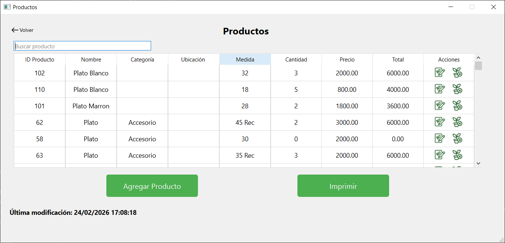
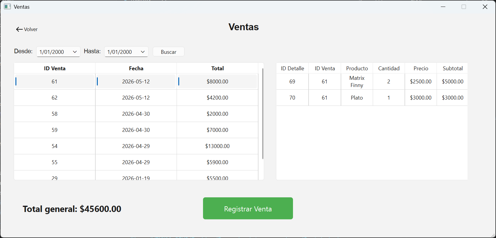
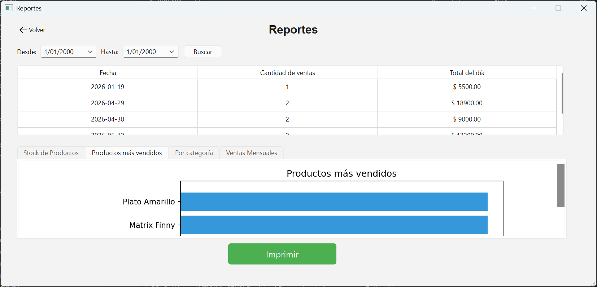
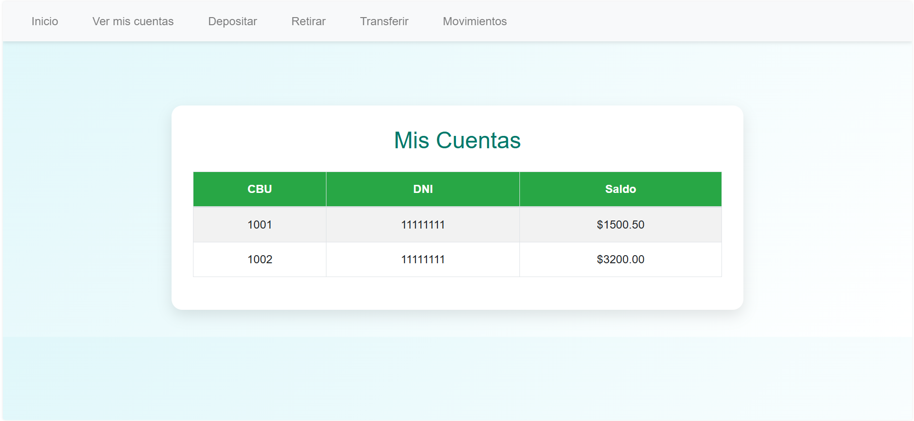
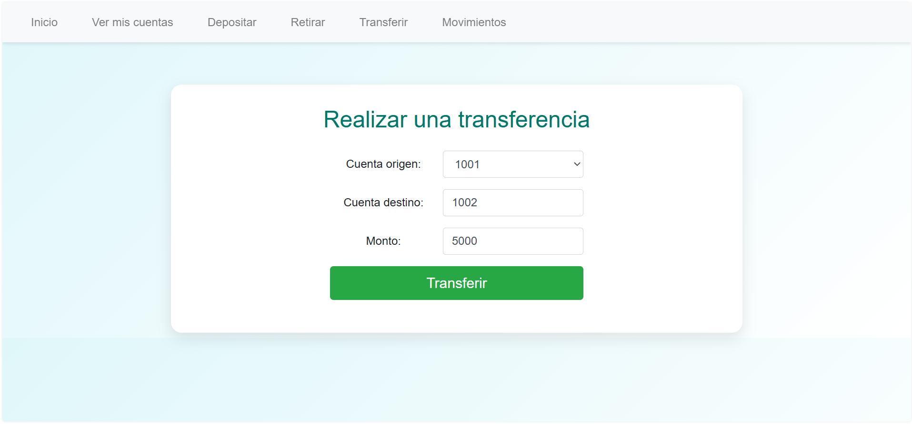
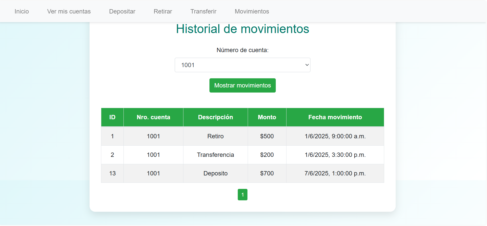

Hola, soy Francisco
Desarrollador backend enfocado en Python, Java y bases de datos relacionales.
Sobre mí
Me interesa el desarrollo backend y la construcción de aplicaciones escalables y mantenibles. Disfruto trabajar con Python, Java y bases de datos relacionales, aplicando buenas prácticas de arquitectura y diseño de software. Actualmente continúo aprendiendo para seguir creciendo profesionalmente.
Proyectos
Sistema de Gestión de Vivero
Sistema de escritorio desarrollado para la administración de un vivero. Permite gestionar productos, controlar stock, registrar ventas, visualizar estadísticas y generar reportes utilizando PostgreSQL como base de datos.



Sistema Homebanking
Sistema tipo homebanking desarrollado en equipo como proyecto académico en la UTN. Incluye interfaz web y versión por consola (CLI) para gestionar cuentas bancarias, realizar transferencias, depósitos, retiros y consultar movimientos mediante una API REST.



Tecnologías
Formación
Tecnicatura Superior en Sistemas Informáticos
Universidad Tecnológica Nacional (UTN) · Finalizada en 2026. Formación orientada al desarrollo de software, bases de datos, programación orientada a objetos y arquitectura de aplicaciones.